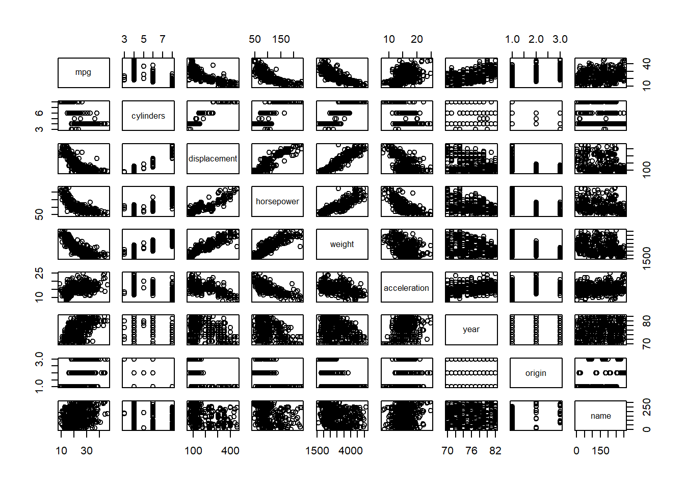

The p-values in this table refer to the null hypothesis \(H_o : \beta_i = 0\), where \(\beta_i\) refers to the Coefficient relating to the concerned variable.
Based on these p-values, I conclude that TV and radio are significant predictors of variation in sales, whereas newspaper is not a statistically significant predictor of variation in sales.
Question 2
KNN Classifier is a method used for modeling categorical or qualitative responses. Here, the classifier returns the category of response which is most likely, given the values of predictors in \(N_o\) i.e. K-nearest neighbors. KNN classifier first identifies the K points in the training data that are closest to \(x_o\), represented by \(\mathcal{N}_o\). It then estimates the conditional probability for class \(j\) as the fraction of points in \(\mathcal{N}_o\) whose response values equal \(j\) \[Pr(Y = j |x=x_o) = \frac{1}{K} \sum_{x_i \in N_o} I(y_i = j)\]
Finally, KNN applies Bayes rule and classifies the test observation \(x_o\) to the class with the largest probability. - KNN Regression is a method which models continuous outcomes or responses based on predictors. It calculates the predicted outcome as the average of responses for the K-nearest neighbors of the given \(x_o\), i.e. :— \[\hat{f}(x_o) = \frac{1}{K} \sum_{x_i \in N_o} y_i \]
Question 3
(a)
This statement is incorrect because coefficient \(\hat{\beta}_3\) is positive, meaning thereby that females (coded as 1) earn more than males _(coded as 0)
This statement is incorrect because coefficient \(\hat{\beta}_3 = 35\) is positive, meaning thereby that females (coded as 1) earn more than males _(coded as 0), but only if the GPA is less than 3.5. This is because the coefficient of interaction term for Gender and GPA\(\hat{\beta}_5 = -10\). Thus above a certain value, males will have higher earnings.
This statement is correct because coefficient \(\hat{\beta}_3 = 35\) is positive but the coefficient of interaction term for Gender and GPA\(\hat{\beta}_5 = -10\), meaning thereby that females (coded as 1) earn more than males (coded as 0) only up to a certain GPA level, above which the males earn more.
This statement is incorrect for reasons explained above in (iii).
(b)
The salary of a female with IQ of 110 and a GPA of 4.0 is 137.1, as calculated below :–
False. The magnitude of a coefficient does not tell us anything about the significance of the interaction amongst GPA and IQ. This is because the magnitude / value of a coefficient depends on the units of predictor variables chosen. Rather, the standard error and \(p\)-value associated with the coefficient will tell us whether there is any evidence of an interaction or not.
Question 4
(a)
The Training Residual Sum of Squares (RSS) for the cubic regression will always be lower than the simple linear regression, even if the true population model is linear i.e. \(Y = \beta_o + \beta_1(X) + \epsilon\). This is because more terms in the cubic regression provide more flexibility and thus allows the model to fit each data point more closely. Thus, the RSS is reduced. This is not good thing for us though, as the cubic regression will lead to overfitting.
(b)
For the Test Residual Sum of Squares, the simple linear regression will have a lower RSS than cubin regression. This happens because our true population model is linear, so cubic regression leads to overfitting. This causes Test RSS to rise, as compared to linear regression.
(c)
Even if we do not know the form of true population relation between \(Y\) and \(x\), the cubic regression will always have a lower Training RSS. This is because the cubic regression is a more flexible model, and thus always fits the training data more closely leading to a lower Training RSS.
(d)
For the Test RSS, when the form true relationship between \(Y\) and \(x\) is unknown, we cannot predict whether the linear regression or cubic regression will perform better. This will be an empirical question. Which of the two models has a lower Test RSS will depend on the exact relation between \(Y\) and \(x\), and how closely it is modeled by the linear or cubic regression.
Question 5
In this question, we are considering the fitted values from a linear regression without an intercept, where \[ \hat{y_i} = x_i \hat{\beta_i} \]
Thus, we can easily replace the value of \(\hat{\beta_i}\) in the equation of \(y_i\) and solve for \(a_i\) as follows — \[ \hat{y_i} = x_i \times \hat{\beta_i} \]\[ \hat{y}_{i} = x_{i} \times \frac{\sum_{i'=1}^{n} x_{i'} y_{i'}}{\sum_{j=1}^{n} x_{j}^{2}} \]\[ \hat{y}_{i} = \sum_{i'=1}^{n} \frac{ x_{i'} y_{i'} \times x_{i}}{\sum_{j=1}^{n} x_{j}^{2}} \]\[ \hat{y}_{i} = \sum_{i'=1}^{n} \left ( \frac{ x_{i} x_{i'} } { \sum_{j=1}^{n} x_{j}^{2} } \times y_{i'} \right ) \]
Thus, we can easily re-write the expression as \[ \hat{y_i} = \sum_{i'=1}^{n} a_{i'}y_i \]
As a result, the value of \(a_i\) is — \[ a_{i'} = \frac{ x_{i} x_{i'} } { \sum_{j=1}^{n} x_{j}^{2} } \]
Also, this means that we can interpret this result by saying that the fitted values (\(\hat{y_i}\)) from a linear regression are linear combination of the response values (\(y_{i'}\)).
Question 6
The least squares regression line is \[ y_i = \hat{\beta_o} + \hat{\beta_1}x_i \]
where, \(beta_o\) and \(beta_1\) are defined as — \[\hat{\beta_o} = \overline{y} - \hat{\beta_1} \overline{x}\]\[\hat{\beta}_{1} = \frac{\sum_{i=1}^{n}(x_{i} - \overline{x}) (y_{i}-\overline{y})}{\sum_{i=1}^{n} (x_{i}-\overline{x})^{2}}\]
Now, we need to prove that when \(x_i = \overline{x}\), then \(\hat{y_i} = \overline{y}\). For this, we substitute the value of \(\beta_o\) with \(\overline{y} - \hat{\beta_1} \overline{x}\) and set the value of \(x_i\) as \(\overline{x}\), \[ \hat{y_i} = \hat{\beta_o} + \hat{\beta_1}\overline{x} \] \[ \hat{y_i} = \overline{y} - \hat{\beta_1} \overline{x} + \hat{\beta_1}\overline{x} \] \[ \hat{y_i} = \overline {y}\]
Thus, the point (\(\overline{x},\overline{y}\)) will always lie on the least squares regression line.
Question 7
Keeping the values of \(\overline{x}\) and \(\overline{y}\) as 0, the terms \(R^2\) and \(Cor(X,Y)\) are defined as follows \[ R^2 = 1 - \frac{RSS}{TSS} = 1 - \frac{\sum(y_i - \hat{y_i})^2}{\sum(y_j-\overline{y})^2} = 1 - \frac{\sum(y_i - \hat{y_i})^2}{\sum{y_j}^2}\] \[ Cor(X,Y) = \frac{\sum_{n}(x_i-\overline{x})(y_i-\overline{y})}{\sum{x_j} \sum{y_j}} = \frac{\sum_{n}x_iy_i}{\sum{x_j} \sum{y_j}}\]
Now, keeping \(\overline{y}\) and \(\overline{x}\) as zero, we can substitute the value of \(\hat{y_i}\) in \(R^2\) as:— \[ y_i = \hat{\beta_o} + \hat{\beta_1}x_i = 0+ \frac{\sum(x_{i} - 0) (y_{i}-0)}{\sum(x_{i}-0)^{2}} = \frac{\sum{x_iy_i}}{\sum{x_i}^2}\]
Thus, we have the following expression for \(R^2\), \[R^2 = 1 - \frac{\sum_i(y_i - \sum_jx_jy_j/\sum_jx_j^2 x_i)^2}{\sum_jy_j^2}\]\[R^2 = \frac{\sum_jy_j^2 - (\sum_iy_i^2 - 2\sum_iy_i(\sum_jx_jy_j/\sum_jx_j^2)x_i + \sum_i(\sum_jx_jy_j/\sum_jx_j^2)^2x_i^2)}{\sum_jy_j^2}\]\[R^2 = \frac{2(\sum_ix_iy_i)^2/\sum_jx_j^2 - (\sum_ix_iy_i)^2/\sum_jx_j^2}{\sum_jy_j^2}\]\[ R^2 = \frac{(\sum_ix_iy_i)^2}{\sum_jx_j^2\sum_jy_j^2} = Cor(X, Y)^2.\]
Applied
Question 8
(a)
library(ISLR)data(Auto)fit1 <-lm(mpg ~ horsepower, data = Auto)summary(fit1)
Call:
lm(formula = mpg ~ horsepower, data = Auto)
Residuals:
Min 1Q Median 3Q Max
-13.5710 -3.2592 -0.3435 2.7630 16.9240
Coefficients:
Estimate Std. Error t value Pr(>|t|)
(Intercept) 39.935861 0.717499 55.66 <2e-16 ***
horsepower -0.157845 0.006446 -24.49 <2e-16 ***
---
Signif. codes: 0 '***' 0.001 '**' 0.01 '*' 0.05 '.' 0.1 ' ' 1
Residual standard error: 4.906 on 390 degrees of freedom
Multiple R-squared: 0.6059, Adjusted R-squared: 0.6049
F-statistic: 599.7 on 1 and 390 DF, p-value: < 2.2e-16
There is a relationship between response and predictor, as the overall F-statistic and t-value for the predictor horsepower are statistically significant. The p-value is very close to zero.
The strength of the relationship between the response mpg and predictor horsepower is given by the coefficient of regression i.e. -0.16, with a 95% confidence interval of [-0.17, -0.15].
The relation between the response and predictor is negative, as the coefficient for horsepower is negative, i.e. -0.16.
The predicted mpg for a horsepower value of 98, with the confidence and prediction intervals is as follows:
plot(x = Auto$horsepower, y = Auto$mpg)abline(fit1, lwd =3, col ="red")
(c)
The diagnostic plots, along with the required code to produce them, are displayed below. The Residuals vs Fitted plot shows that the residuals are not evenly distributed, and thus there is a non-linear relation between the response and predictor. The Normal Q-Q plot also shows evidence on whether the residuals are normal distributed. The current evidence shows that the distribution is somewhat normal. The Spread-Location plot of \(\sqrt{standardized \ residuals}\) vs. fitted values shows the spread of residuals along the range of predictor values, allowing us to test homoskedasticity. Here, the model fit1 suffers from heteroskedasticity. The last plot of Residuals vs. Leverage shows us whether any observations are high-leverage. Here, none of the observations appear outside the dashed lines and thus there is no influential observation which is altering the results of the regression model.
par(mfrow =c(2, 2))plot(fit1)
par(mfrow =c(1, 1))
Question 9
(a)
A scatter-plot matrix of all the variables in Auto data set is produced using the function pairs() as follows :—
library(ISLR)data(Auto)pairs(Auto)

(b)
The correlation matrix between variables of Auto is shown below, after excluding the variable name. We can use the base R command cor. However, a more beautiful tabular display is shown below using the package corrplot.
The multiple linear regression of mpg on all other variables, except name is displayed below:
fit2 <-lm(mpg ~ . - name, data = Auto)summary(fit2)
Call:
lm(formula = mpg ~ . - name, data = Auto)
Residuals:
Min 1Q Median 3Q Max
-9.5903 -2.1565 -0.1169 1.8690 13.0604
Coefficients:
Estimate Std. Error t value Pr(>|t|)
(Intercept) -17.218435 4.644294 -3.707 0.00024 ***
cylinders -0.493376 0.323282 -1.526 0.12780
displacement 0.019896 0.007515 2.647 0.00844 **
horsepower -0.016951 0.013787 -1.230 0.21963
weight -0.006474 0.000652 -9.929 < 2e-16 ***
acceleration 0.080576 0.098845 0.815 0.41548
year 0.750773 0.050973 14.729 < 2e-16 ***
origin 1.426141 0.278136 5.127 4.67e-07 ***
---
Signif. codes: 0 '***' 0.001 '**' 0.01 '*' 0.05 '.' 0.1 ' ' 1
Residual standard error: 3.328 on 384 degrees of freedom
Multiple R-squared: 0.8215, Adjusted R-squared: 0.8182
F-statistic: 252.4 on 7 and 384 DF, p-value: < 2.2e-16
The output shows that there is a relationship between response and predictors. The F-statistic of 252.43 (generated by summary(fit2)$fstatistic[1]) has a p-value of nearly zero.
The predictors which appear to have a statistically significant relationship to the response are displacement, weight, year and origin.
The coefficient for year is 0.751 (round(fit2$coef[7],3)). This suggests that with each year, the value of miles per gallon mpg increases by 0.75, provided all other variables remain constant. In other words, with each year, fuel efficiency increases by 0.75 [95% CI = 0.65, 0.85] mpg/year if other variables remain the same.
(d)
The diagnostic plots for this multiple linear regression are shown below.
par(mfrow =c(2, 2))plot(fit2)
Residuals vs Fitted Plot shows whether the residuals from multiple linear regression have non-linear patterns. We find that the residuals are not evenly spread around the horizontal line. Perhaps there is some non-linear relationship between the response and predictors, which is not captured by the linear model we have fitted.
Normal Q-Q Plot shows us whether the residuals are normally distributed. Since, residuals follow the straight line when plotted with theoretical quantiles of a normal distribution, this plot suggests that the residuals are somewhat normally distributed, barring a few observations with high residual values.
Scale-Location Plot checks the assumption of homoskedasticity. The plot suggests some amount of heteroskedasticity.
Residuals vs Leverage Plot helps us to find influential cases with high leverage and outliers (high absolute standardized residual value). In this data set, around 5 observations like 323, 326, 327, 394 etc. are outliers and observation 14 has a high leverage. But, there is no observation outside of the dashed line, the Cook’s distance, thus there is no observation which is significantly affecting the regression results.
(e)
To fit various interaction terms in the Multiple linear regression model, we use two strategies :—
First, we use three interactions to fit to the model, using the three variable pairs which carry the highest correlation from the correlation matrix shown in part (b) above: \(displacement \times cylinders\) , \(displacement \times weight\) and \(weight \times cylinders\).
The results below suggest that only the interaction between displacement and weight is statistically significant. However, using predictor variables with high correlation means that our fitted model may suffer from multicollinearity.
fit3 <-lm(mpg ~ . - name + displacement:cylinders + displacement:weight + weight:cylinders, data = Auto)summary(fit3)
Secondly, we can create a lot of permutations of variables to create various interaction terms and use R code to select the interaction terms with significant p-values (<0.05). This is shown below:—
Thus, as we see above, the interaction terms \(displacement \times year\), \(acceleration \times year\) and \(acceleration \times origin\) are statistically significant predictors of the response mpg.
It is evident from above two approaches, that the exact model we use decides which interaction terms are statistically significant predictors of the outcome. Thus, interaction terms should be chosen on theoretical basis for interaction effects and then fitted into the model.
(f)
Now, we fit different types of models using 3 transformations of the predictor and response variables. We use only one predictor variable horsepower for ease of demonstration. The response variable continues to be mpg. We compare the models using plots with the fitted regression line, along with value of \(R^2\) in the top of the graph in red font. The plots how that the log transformation of the predictor variable leads to the best fit and highest \(R^2\).
fit5 <-lm(mpg ~ horsepower, data = Auto)fit6 <-lm(mpg ~I(horsepower^2), data = Auto)fit7 <-lm(mpg ~log(horsepower), data = Auto)fit8 <-lm(mpg ~sqrt(horsepower), data = Auto)attach(Auto)par(mfrow =c(2, 2))plot(horsepower, mpg)abline(fit5, col ="red", lwd =4)mtext(round(summary(fit5)$r.squared, 2), col ="red")plot(horsepower^2, mpg)abline(fit6, col ="red", lwd =4)mtext(round(summary(fit6)$r.squared, 2), col ="red")plot(log(horsepower), mpg)abline(fit7, col ="red", lwd =4)mtext(round(summary(fit7)$r.squared, 2), col ="red")plot(sqrt(horsepower), mpg)abline(fit8, col ="red", lwd =4)mtext(round(summary(fit8)$r.squared, 2), col ="red")
The interpretation of each coefficient in the regression model is given below. The response variable is Sales, i.e. sales of car seats in thousands.
For each unit increase in price of carseats, the sales decrease by 54.4 units.
On average, stores located in Urban areas in US sell 21.9 less car seats than stores located in rural areas.
On average, stores located in US sell 1200.5 car seats more than stores located in other countries.
(c)
This model can be written in equation form as \[ Sales(in \; thousands) = 13.043 -0.054\times Price - 0.022 \times Urban + 1.201 \times US + \epsilon \]
(d)
For the predictors Price and US, we can reject the null hypothesis \(H_o: \beta_j = 0\) because their associated p-value is less than 0.05.
(e)
A smaller model is fit as shown below.
fit10 <-lm(Sales ~ Price + US, data = Carseats)round(summary(fit10)$coef, 4)
If we compare the two models in (a) and (e), we find that an Analysis of Variance tells that the two models are not significantly different from each other. How well each model fits the data is revealed by the adjusted \(R^2\), which is 0.23round(summary(fit9)$adj.r.squared,4)for model in (a) and 0.24round(summary(fit10)$adj.r.squared,4) for model in (e).
anova(fit9, fit10)
Analysis of Variance Table
Model 1: Sales ~ Price + Urban + US
Model 2: Sales ~ Price + US
Res.Df RSS Df Sum of Sq F Pr(>F)
1 396 2420.8
2 397 2420.9 -1 -0.03979 0.0065 0.9357
(g)
The 95% Confidence Intervals for the coefficients in model from (e) are shown below.
The evidence for outliers and high leverage points in model from (e) can be seen using the diagnostic plots and R code given below. The plots reveal that there are 23outliers (sum(abs(rstudent(fit10))>2)) with absolute value of studentized residual greater than 2, but none of these has an absolute studentized residual more than 3. Similarly, there are 20 high leverage observations (sum(hatvalues(fit10) > 2*mean(hatvalues(fit10)))) where \(h_i > 2\overline{h}\). Lastly, sum(cooks.distance(fit10) > 4/length(cooks.distance(fit10)))19 observations are influential as they Cook’s Distance \(D_i > 4/n\).
sum(abs(rstudent(fit10)) >2)sum(hatvalues(fit10) >2*mean(hatvalues(fit10)))sum(cooks.distance(fit10) >4/length(cooks.distance(fit10)))par(mfrow =c(2, 3))plot(fit10, which =c(1:6))
Question 11
(a)
The simple linear regression of \(y\) onto \(x\) is shown below. The coefficient \(\hat{\beta}\) for \(x\) is 1.9939. The standard error is 0.1065. The t-value is 18.73 and p-value is nearly 0. The interpretation is that \(x\) is a statistically significant predictor of \(y\).
set.seed(1)x <-rnorm(100)y <-2* x +rnorm(100)fit11 <-lm(y ~ x +0)summary(fit11)
Call:
lm(formula = y ~ x + 0)
Residuals:
Min 1Q Median 3Q Max
-1.9154 -0.6472 -0.1771 0.5056 2.3109
Coefficients:
Estimate Std. Error t value Pr(>|t|)
x 1.9939 0.1065 18.73 <2e-16 ***
---
Signif. codes: 0 '***' 0.001 '**' 0.01 '*' 0.05 '.' 0.1 ' ' 1
Residual standard error: 0.9586 on 99 degrees of freedom
Multiple R-squared: 0.7798, Adjusted R-squared: 0.7776
F-statistic: 350.7 on 1 and 99 DF, p-value: < 2.2e-16
(b)
The simple linear regression of \(x\) onto \(y\) is shown below. The coefficient \(\hat{\beta}\) for \(y\) is 0.3911. The standard error is 0.021. The t-value is 18.73 and p-value is nearly 0. The interpretation is that \(y\) is a statistically significant predictor of \(x\).
fit12 <-lm(x ~ y +0)summary(fit12)
Call:
lm(formula = x ~ y + 0)
Residuals:
Min 1Q Median 3Q Max
-0.8699 -0.2368 0.1030 0.2858 0.8938
Coefficients:
Estimate Std. Error t value Pr(>|t|)
y 0.39111 0.02089 18.73 <2e-16 ***
---
Signif. codes: 0 '***' 0.001 '**' 0.01 '*' 0.05 '.' 0.1 ' ' 1
Residual standard error: 0.4246 on 99 degrees of freedom
Multiple R-squared: 0.7798, Adjusted R-squared: 0.7776
F-statistic: 350.7 on 1 and 99 DF, p-value: < 2.2e-16
(c)
The results obtained in (a) and (b) above have the exact same t-statistic, p-value and \(R^2\) (both adjusted \(R^2\) and multiple \(R^2\)). This is because both models fit the same correlation between \(x\) and \(y\).
(d)
In this question, when regression is performed without an intercept, the value of \(\hat{\beta}\) and \(SE(\hat{\beta})\) is given by: \[ \hat{\beta} = \frac{\sum_{i=1}^{n} x_iy_i}{\sum_{i'=1}^{n}x_{i'}^2} = \sum_i{x_i}{y_i}/\sum_j{x_j^2}\]\[SE(\hat{\beta}) = \sqrt{\frac{\sum_{i=1}^n(y_i - x_i\hat{\beta})^2}{(n - 1)\sum_{i'=1}^nx_{i'}^2}} = \sqrt{\sum_i(y_i - x_i\hat{\beta})^2/(n - 1)\sum_jx_j^2}\] Thus, we can show that:— \[ t = \frac{\hat{\beta}}{SE(\hat{\beta})}\]\[t = \frac{\sum_ix_iy_i/\sum_jx_j^2}{\sqrt{\sum_i(y_i - x_i\hat{\beta})^2/(n - 1)\sum_jx_j^2}} \]\[t = \frac{\sum_ix_iy_i \sqrt{n - 1}}{\sum_jx_j^2{\sqrt{\sum_i(y_i - x_i\hat{\beta})^2/\sum_jx_j^2}}} \]\[t = \frac{\sum_ix_iy_i \sqrt{n - 1}}{{\sqrt{\sum_j{x_j}^2 \sum_i(y_i - x_i\hat{\beta})^2}}} \]\[t = \frac{\sum_ix_iy_i \sqrt{n - 1}}{{\sqrt{\sum_j{x_j}^2 \sum_i(y_i - x_i\hat{\beta})^2}}} \]
We now replace the value of \(\hat{\beta}\) into this equation and solve:— \[t = \frac{\sqrt{n - 1}\sum_ix_iy_i}{\sqrt{\sum_jx_j^2\sum_i(y_i - x_i\sum_ix_iy_i/\sum_jx_j^2)^2}}\]\[t = \frac{\sqrt{n - 1}\sum_ix_iy_i}{\sqrt{(\sum_jx_j^2)(\sum_jy_j^2) - (\sum_jx_jy_j)^2}}\]
Further, this result can be confirmed in R Code given below which shows that the calculated t-value using this formula is the same t-value as shown in models fit11 and fit12 :—
From the results in (d) above, it is clear that \(t-statistic\) will be the same even if \(x\) and \(y\) are interchanged. The equation for \(t-statistic\) is associative in \(x\) and \(y\).
(f)
Now, we perform the regressions with an intercept. The t-values of both regressions are displayed using the code below. It is clear that both the t-values are equal.
The coefficient for regression of \(Y\) onto \(X\) is given by: \[\hat{\beta} = \frac{\sum_ix_iy_i}{\sum_jx_j^2}\]
and, the coefficient for regression of \(X\) onto \(Y\) is given by: \[\hat{\beta'} = \frac{\sum_ix_iy_i}{\sum_jy_j^2}\]
Thus, \(\hat{\beta} = \hat{\beta'}\) in a special condition when, \[{\sum_jx_j^2} = {\sum_jy_j^2}\] .
set.seed(1)x <-rnorm(100, mean =0, sd =1)eps <-rnorm(100, mean =0, sd =sqrt(0.25))y <--1+0.5* x + epslength(y)
[1] 100
The length of vector y is 100 (length(y)). The coefficient \(\beta_o\) is -1, and the coefficient \(\beta_1\) is 0.5.
(d)
The scatter-plot between x and y is shown below. We see that there is a linear relationship between x and y, although some random variability is introduced by the eps noise.
par(mfrow =c(1, 1))plot(x, y)
(e)
fit19 <-lm(y ~ x)coef(fit19)
(Intercept) x
-1.0188463 0.4994698
The coefficient \(\hat{\beta_o}\) is -1.02 round(coef(fit19)[1],2), and the coefficient \(\hat{\beta_1}\) is 0.5 round(coef(fit19)[2],2). Both these estimates are quite close to the true model coefficients.
(f)
plot(x, y)abline(fit19, col ="red", lty =2)abline(a =-1, b =0.5, col ="blue")legend(-2, 0.5,legend =c("Fitted Least Squares Line", "True Regression Model"),col =c("red", "blue"),lty =2:1,cex =0.8)
(g)
After fitting a quadratic term, we observe that there is no significant improvement in the model fit because the ANOVA comparison shows a p-value > 0.05.
fit20 <-lm(y ~ x +I(x^2))anova(fit19, fit20)
Analysis of Variance Table
Model 1: y ~ x
Model 2: y ~ x + I(x^2)
Res.Df RSS Df Sum of Sq F Pr(>F)
1 98 22.709
2 97 22.257 1 0.45163 1.9682 0.1638
(h)
Now, we re-create steps in questions (a) to (f), but with a lower variance in the error terms, say \(var(\epsilon) = 0.05\). The results how that now the estimated coefficients are much closer to the true model parameters. And, the fitted least squares line is much closer to the true regression model line. However, the confidence intervals for the estimated coefficients are much narrower.
set.seed(1)x <-rnorm(100, mean =0, sd =1)eps <-rnorm(100, mean =0, sd =sqrt(0.05))y <--1+0.5* x + epsfit21 <-lm(y ~ x)plot(x, y)abline(fit19, col ="red", lty =2)abline(a =-1, b =0.5, col ="blue")legend(-2, 0.0,legend =c("Fitted Least Squares Line", "True Regression Model"),col =c("red", "blue"), lty =2:1, cex =0.8)
(i)
Now, we re-create steps in questions (a) to (f), but with higher variance in the error terms, say \(var(\epsilon) = 5.0\). The results how that now the estimated coefficients are further away from the true model parameters. And, the fitted least squares line is still somewhat close to the true regression model line because we have a large number of observations. However, the confidence intervals for the estimated coefficients are very wide.
set.seed(1)x <-rnorm(100, mean =0, sd =1)eps <-rnorm(100, mean =0, sd =sqrt(5))y <--1+0.5* x + epsfit22 <-lm(y ~ x)plot(x, y)abline(fit19, col ="red", lty =2)abline(a =-1, b =0.5, col ="blue")legend(-2, 4, legend =c("Fitted Least Squares Line", "True Regression Model"), col =c("red", "blue"), lty =2:1, cex =0.8)
(j)
The confidence intervals for the coefficients \(\hat{\beta_o}\) and \(\hat{\beta_1}\) are tabulated below. The results show that the confidence intervals for the coefficient estimates are much wider when the variance in error terms \(\epsilon\) is higher.
In the R-code given by the question, and reproduced below, the linear model is: \[ y = 2 + 2x_1 \ + \ 0.3x_2 \ + \ \epsilon \] where, \(\epsilon \sim \mathcal{N}(0,1)\) is a random error term. The regression coefficients are \(\beta_o = 2\), \(\beta_1 = 2\) and \(\beta_2 = 0.3\).
Based on the R code given, x1 and x2 seems positively correlated. The correlation coefficient between x1 and x2 calculated using code in R is 0.84 (round(cor(x1, x2),2)). The scatter plot matrix is given below:
cor(x1, x2)
[1] 0.8351212
plot(x1, x2)
(c)
The regression of y onto x1 and x2 is fitted below. The results show that around 23% variability in y is explained by this model, and the model is significantly better than a NULL model, i.e. \(\hat{y} = \overline{y}\). Further, x1 is a statistically significant predictor of y, whereas x2 is not. We can safely reject the two null hypotheses \(H_o \ : \ \beta_o = 0\) and \(H_o \ : \ \beta_1 = 0\). However, we cannot reject the null hypothesis \(H_o \ : \ \beta_2 = 0\). The estimated coefficients of regression are: \(\hat{\beta_o} = 2.01\), \(\hat{\beta_1} = 2.3\) and \(\hat{\beta_2} = -0.24\). The estimated coefficient for intercept is reasonably close to the true parameter, however the estimated coefficients for x1 and x2 is totally off target.
fit23 <-lm(y ~ x1 + x2)summary(fit23)
Call:
lm(formula = y ~ x1 + x2)
Residuals:
Min 1Q Median 3Q Max
-2.8311 -0.7273 -0.0537 0.6338 2.3359
Coefficients:
Estimate Std. Error t value Pr(>|t|)
(Intercept) 2.1305 0.2319 9.188 7.61e-15 ***
x1 1.4396 0.7212 1.996 0.0487 *
x2 1.0097 1.1337 0.891 0.3754
---
Signif. codes: 0 '***' 0.001 '**' 0.01 '*' 0.05 '.' 0.1 ' ' 1
Residual standard error: 1.056 on 97 degrees of freedom
Multiple R-squared: 0.2088, Adjusted R-squared: 0.1925
F-statistic: 12.8 on 2 and 97 DF, p-value: 1.164e-05
(d)
Now, we fit linear least squares regression using only x1 as a predictor for the response y. The resulting model is statistically significantly better than the null model due to a very low p-value on the F-statistic. Further, it explains 24% of the variability in y. We can safely reject the two null hypotheses \(H_o \ : \ \beta_o = 0\) and \(H_o \ : \ \beta_{x1} = 0\). The estimated coefficients of regression are: \(\hat{\beta_o} = 2.01\), \(\hat{\beta_{x1}} = 2.2\). They are reasonably close to the true parameters.
fit24 <-lm(y ~ x1)summary(fit24)
Call:
lm(formula = y ~ x1)
Residuals:
Min 1Q Median 3Q Max
-2.89495 -0.66874 -0.07785 0.59221 2.45560
Coefficients:
Estimate Std. Error t value Pr(>|t|)
(Intercept) 2.1124 0.2307 9.155 8.27e-15 ***
x1 1.9759 0.3963 4.986 2.66e-06 ***
---
Signif. codes: 0 '***' 0.001 '**' 0.01 '*' 0.05 '.' 0.1 ' ' 1
Residual standard error: 1.055 on 98 degrees of freedom
Multiple R-squared: 0.2024, Adjusted R-squared: 0.1942
F-statistic: 24.86 on 1 and 98 DF, p-value: 2.661e-06
(e)
Now, we fit linear least squares regression using only x2 as a predictor for the response y. The resulting model is statistically significantly better than the null model due to a very low p-value on the F-statistic. Further, it explains only 14.8% of the variability in y. Based on this model, we can safely reject the two null hypotheses \(H_o \ : \ \beta_o = 0\) and \(H_o \ : \ \beta_{x2} = 0\). The estimated coefficients of regression are: \(\hat{\beta_o} = 2.42\), \(\hat{\beta_{x2}} = 2.8\). Surprisingly, the coefficient estimates are widely off target for both the intercept and the predictor. Despite being statistically significant, the estimates do not incorporate the true parameter values even in their 95 % confidence interval.
fit25 <-lm(y ~ x2)summary(fit25)
Call:
lm(formula = y ~ x2)
Residuals:
Min 1Q Median 3Q Max
-2.62687 -0.75156 -0.03598 0.72383 2.44890
Coefficients:
Estimate Std. Error t value Pr(>|t|)
(Intercept) 2.3899 0.1949 12.26 < 2e-16 ***
x2 2.8996 0.6330 4.58 1.37e-05 ***
---
Signif. codes: 0 '***' 0.001 '**' 0.01 '*' 0.05 '.' 0.1 ' ' 1
Residual standard error: 1.072 on 98 degrees of freedom
Multiple R-squared: 0.1763, Adjusted R-squared: 0.1679
F-statistic: 20.98 on 1 and 98 DF, p-value: 1.366e-05
(f)
At the first sight, the results from (c), (d) and (e) do seem to contradict each other. Firstly, the coefficient for x2 is non-significant and negative in the multiple regression, but turns positive and highly significant in simple regression. Further, there is very high error in estimate of \(\hat{\beta_2}\) in the multiple regression (because x2 is correlated with x1, and this collinearity widens the confidence interval). Secondly, the simple regression using only x2 as a predictor displays a large positive coefficient estimate, much more than the true parameter. This is perhaps because x2 is acting as a surrogate for x1 in the simple regression of y onto x2.
The situation in questions (c) to (e) present a text book example of collinearity. When two predictors (x1 and x2) are highly correlated, the parameter estimates in multiple linear regression tend to have large standard errors of estimation. This leads to imprecise estimates with wide confidence intervals. Thus, they null hypothesis cannot be rejected in the multiple linear regression. However, simple regression performed after dropping one of the correlated predictors can solve the problem of imprecise estimates. Here, the simple linear regression of either predictor shows them to be highly significant predictors of y. But, we must be wary that simple regression involving such predictors can lead to misleading estimates of the true underlying relationship.
(g)
Now, we add a new observation as provided in the question and fit the three models again. The new models are checked for leverage and standardized residual (outlier status) of the new observation. The results are compactly produced in the table produced at the end. We compare the models and find the following results: - In the multiple linear regression model, adding the new observation totally throws off the estimated coefficients for x1 and x2. Adding this observation has a major impact on the re-fitted model. The new observation is an outlier, having an absolute standardized residual > 2 (though it is < 3). The new observation has high leverage, and thus a high influence on the re-fitted model. This is shown in the diagnostic plots as well. Lastly, this means that a fitted model with high collinearity is not robust, it is very vulnerable to misread observations. - In the simple linear regression model with x1 as predictor, adding the new observation has very low impact on the coefficients. The new observation is an extreme outlier, with an absolute standardized residual greater than 3. However, the new observation has a very low leverage, and thus, it is not influential on the re-fitted model at all. - In the simple linear regression model with x2 as predictor, adding the new observation has a moderate to low impact on the coefficients. The new observation is not an outlier, and thus even though it has somewhat high leverage, it has no major influence on the fitted model.